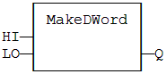
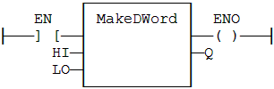

Function
Builds a double word as the concatenation of two words.
|
Name |
Type |
Description |
|
HI |
USINT |
Highest significant word. |
|
LO |
USINT |
Lowest significant word. |
|
Name |
Type |
Description |
|
Q |
UINT |
32 bit register. |
In LD language, the operation is executed only if the input rung (EN) is TRUE. The output rung (ENO) keeps the same value as the input rung. In IL, the first input must be loaded in the current result before calling the function.
Q := MAKEDWORD (HI, LO);

The function is executed only if EN is TRUE.
ENO keeps the same value as EN.
